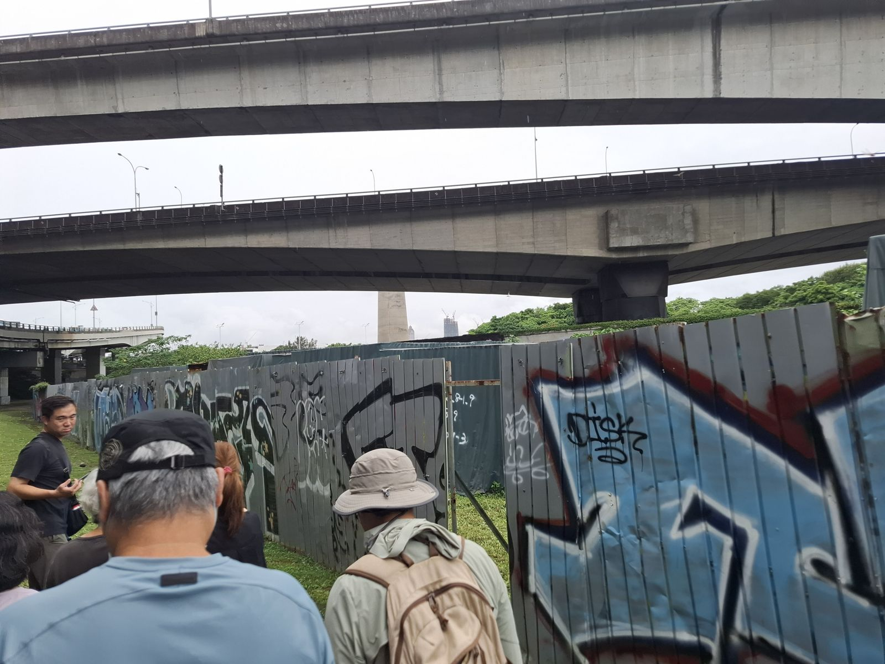

190119332002？初代鐵橋二代拱橋拆成 435 塊下一步
中山橋靜靜佇立在基隆河上，陪臺北走過不同時代，也承載了許多市民的生活記憶。它雖然因為基隆河整治與防洪需求而暫時拆卸保存，歷史價值卻一直留在人們心裡。這次的活動想做的，是先聽它的故事、再一起想像：如果要讓中山橋重新回到城市生活裡，有哪些可能？

曾經叫做「明治橋」的那座橋
中山橋 1933 年完工，在基隆河上站了將近七十年，2002 年底因為防洪被切成 435 塊，搬到高架橋下的再春游泳池舊址，一放就是二十多年。這一場先在劍潭青年活動中心的教室聽它的身世、玩一場「如果我來決定」的貼紙遊戲，再走五分鐘，到平常不開放的構件放置場，站在一塊塊比人還高的橋體旁邊。
中山橋靜靜佇立在基隆河上，陪臺北走過不同時代，也承載了許多市民的生活記憶。它雖然因為基隆河整治與防洪需求而暫時拆卸保存，歷史價值卻一直留在人們心裡。這次的活動想做的，是先聽它的故事、再一起想像：如果要讓中山橋重新回到城市生活裡，有哪些可能？
當天下午先在室內認識中山橋、玩創意互動，吃完點心後趁雨停走到構件放置場。以下照著當天的順序整理，每站附當天拍的照片，點圖可放大、用方向鍵切換。